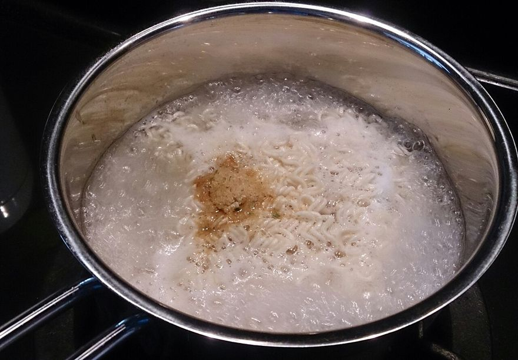
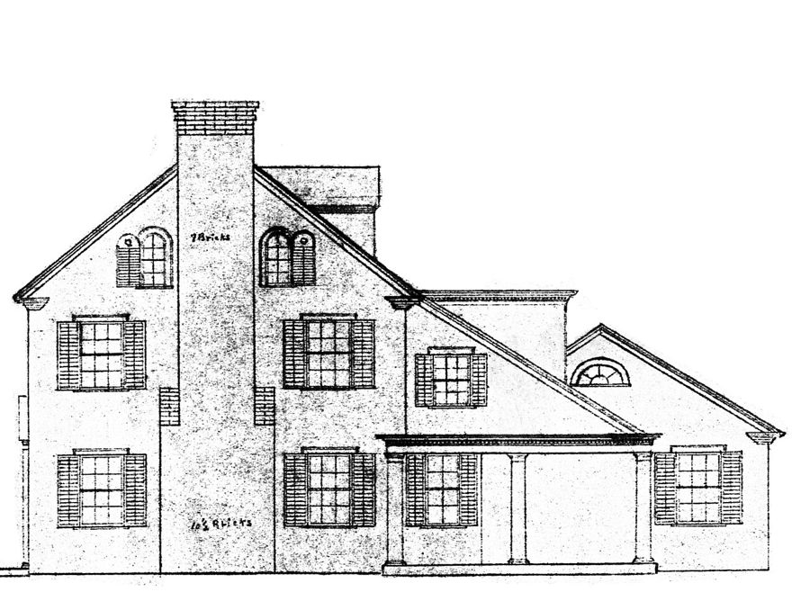

우리 집에 요리 로봇이 왔어요. “라면 끓여 줘!”라고 했더니 로봇이 멀뚱멀뚱 서 있어요. 로봇은 ‘라면 끓이기’가 무엇인지 몰라요. 그래서 매번 이렇게 말해 줘야 해요.
“물 550mL를 끓여. 면과 수프를 넣어. 5분 동안 끓여. 불을 꺼. 그릇에 담아.”
배고플 때마다 다섯 문장을 다 말해야 한다면 너무 귀찮겠죠? 한 번만 가르쳐 두고 “라면 끓여 줘” 한마디로 끝낼 수는 없을까요?

물 끓이기 → 면과 수프 넣기 → 5분 끓이기 → 불 끄기 → 그릇에 담기. 이 다섯 단계를 ‘라면 끓이기’라는 이름 하나로 묶으면 그것이 함수예요.사진: ProjectManhattan · CC BY-SA 3.0 · Wikimedia Commons
쉽게 말하면
로봇에게 “라면 끓여 줘”라고 한마디만 하면 되는 이유는, ‘물 550mL 끓이기 → 면과 수프 넣기 → 5분 끓이기 → 불 끄기 → 그릇에 담기’를 ‘라면 끓이기’라는 이름 하나로 묶어 두었기 때문입니다. 이 묶음이 함수이고, ‘라면 3개’, ‘계란 추가’처럼 바꿔 넣는 값이 매개 변수입니다.
return의 두 가지 역할 — ① 값을 반환한다 ② 함수를 즉시 종료한다. 값 없이 return만 쓰면 None을 반환하며, 그 아래 문장은 실행되지 않습니다.
예제 — 회문 검사: 조건에 걸리면 return으로 즉시 빠져나온다
def reverse(s):
if len(s) == 0: # ❶ 빈 문자열이면
print('문자열이 비어 있습니다.')
return # 값 없이 종료
elif len(s) > 20: # ❷ 너무 길면
print('문자열의 길이가 너무 깁니다.')
return
r = s[::-1]
print(f'기존: {s}, 역순: {r}', end='')
if s == r:
print(' ==> 회문입니다.')
else:
print(' ==> 회문이 아닙니다.')
reverse('') # 문자열이 비어 있습니다.
reverse('level') # 기존: level, 역순: level ==> 회문입니다.
reverse('cat') # 기존: cat, 역순: tac ==> 회문이 아닙니다.
reverse('Believe you can, and you are halfway there') # 길이가 너무 깁니다.
회문이란 앞에서 읽으나 뒤에서 읽으나 같은 문자열입니다. s[::-1]은 문자열을 통째로 뒤집습니다. f-string은 f'…{변수}…' 형태로 값을 문자열에 끼워 넣는 방법으로, 가독성이 좋습니다.
코드 따라가기
함수 호출 따라가기 — 인수가 매개 변수로 들어가는 순간
결과 예측
return을 만나면?
빈칸 채우기
함수 만들기 — 원의 넓이
매개 변수·반환값 유무에 따른 4가지 형태
형태
예시
쓰임
둘 다 없음
print_numbers()
정해진 동작만 반복
매개 변수만 있음
draw_square(length)
받은 값으로 동작만 수행
반환값만 있음
get_position()
현재 상태를 알려 줌
둘 다 있음
get_dist(p1, p2)
입력을 처리해 결과를 돌려줌
① 매개 변수도 반환값도 없는 함수
def print_numbers():
for i in range(1, 11):
input('Enter키를 누르세요.')
print(i)
print_numbers()
② 매개 변수는 있고 반환값은 없는 함수 — turtle로 정사각형 그리기
!pip install ColabTurtle -q # 코랩에서 한 번만 설치
from ColabTurtle.Turtle import *
initializeTurtle(initial_speed=8) # 그림판 준비
def draw_square(length):
for _ in range(4): # 정사각형이므로 4번 반복
forward(length) # 받은 길이만큼 이동
right(90) # 오른쪽으로 90도 회전
draw_square(100)
코랩에서 거북이 그래픽 쓰기 — 구글 코랩은 파이썬 기본 turtle을 지원하지 않습니다(창을 띄울 수 없기 때문). 대신 ColabTurtle을 설치해 씁니다.
!pip install ColabTurtle -q — 노트북마다 한 번만 실행
initializeTurtle() — 그림판을 만든다. 반드시 먼저 호출
객체(t.) 없이 함수를 그대로 부른다 → forward(100), right(90)
시작 방향이 위쪽이고, 속도는 initial_speed로 1~13 사이에서 지정한다
color('blue') 색 변경, width(3) 굵기, penup()·pendown() 펜 들기/내리기
내 컴퓨터의 파이썬(IDLE·VS Code 등)에서는 import turtle을 그대로 쓰면 됩니다.
③ 매개 변수는 없고 반환값이 있는 함수 — 거북이의 현재 위치
from ColabTurtle.Turtle import *
initializeTurtle(initial_speed=8)
def get_position():
return position() # (x, y) 튜플을 반환
forward(100)
x, y = get_position()
print('거북이의 현재 위치 x:', x)
print('거북이의 현재 위치 y:', y)
같은 이름이 있으면 가까운 쪽(지역)이 이깁니다. 함수 안에서 전역 변수 자체를 바꾸려면 global 키워드가 필요합니다.
drink = 'coffee' # 전역 변수
def print_global_drink():
global drink # 전역 변수를 참조하겠다는 선언
drink = 'coke' # 전역 변수의 값 자체가 바뀜
print('음료:', drink)
전역 변수는 꼭 필요할 때만 — 전역 변수는 함수의 중요한 특징인 독립성을 해칩니다. 한 함수에서 값을 바꾸면 다른 함수에도 영향을 미쳐 코드가 복잡해지고, 예상치 못한 버그가 생길 수 있습니다.
코드 따라가기
지역 변수와 전역 변수 따라가기
직접 해 보기
변수의 영역 — 어느 drink가 바뀔까
전역 영역coffeedrink
함수 안 (지역 영역)—drink
지역 변수 상자는 함수가 실행되는 동안에만 나타났다가 사라져요. global을 쓴 함수만 전역 상자의 값을 바꿔요.
정보과학으로 지식 키우기 · 보충 심화
클린 코드(Clean Code)
클린 코드는 읽기 쉽고 이해하기 쉬운 코드를 작성하자는 원칙입니다. 프로그램이 동작하기만 하면 되는 것이 아니라, 코드 자체가 가독성이 뛰어나고 유지 보수가 쉬워야 한다는 생각에 바탕을 둡니다. 오픈 소스 커뮤니티에서도 중요하게 여기는 원칙입니다.
의미 있는 변수와 함수 이름 사용하기
가독성 좋은 코드 만들기
주석은 필요할 때만 잘 활용하기
간결한 코드 유지하기
모듈화 수행하기
모듈화는 거대한 문제를 작은 조각으로 나누어 다루기 쉽게 하는 과정이며, 작게 나누어진 각 부분을 모듈이라고 합니다. 모듈화하면 재사용할 수 있고, 각 모듈을 독립적으로 테스트·디버깅할 수 있어 개발 속도와 품질이 함께 올라갑니다.
스스로 해결하기
메뉴를 입력하면 주문 완료 문구를 반환하는 order() 함수를 작성해 보자.
user_menu = input('주문할 메뉴를 입력하세요: ')
print(order(user_menu))
# 실행 결과
# 주문할 메뉴를 입력하세요: 버블티
# 버블티 주문이 완료되었습니다.
등교에 40분 걸리는 학생이 학교 도착 예정 시간을 입력하면 집에서 출발할 시간을 출력하는 calculate_time()을 완성해 보자. 단, 도착 예정 시간은 7시 이후 10시 이전이어야 한다.
def calculate_time(hour, min):
if min < 0 or min >= 60:
print('분은 0-59 사이여야 합니다.')
return
# (조건 검사와 시간 계산을 채워 넣기)
print(f'출발 시간: {new_hour}시 {new_min}분')
calculate_time(8, 0) # 출발 시간: 7시 20분
calculate_time(9, 30) # 출발 시간: 8시 50분
calculate_time(10, 40) # 도착 시간은 7시 이후 10시 이전이어야 합니다.
문자열을 전달받아 그 역순을 반환하는 get_rev() 함수를 작성해 보자.
역량 키우기 · 수행 활동
교내 방송실에서 사용할 음악 플레이 리스트 관리 프로그램을 함수로 나누어 작성해 보자.
기능
함수명
곡 추가
add_song()
곡 삭제
remove_song()
플레이 리스트 초기화
reset_playlist()
플레이 리스트 출력
show_playlist()
곡 수 출력
print_song_count()
playlist = [] # 전역 변수
playlist_name = 'My Playlist'
def add_song(song):
playlist.append(song)
print(f'\\'{song}\\'이(가) \\'{playlist_name}\\'에 추가되었습니다.')
def remove_song(song):
...
순서 맞추기
순서 맞추기 — 문자열을 거꾸로 돌려주는 get_rev()
낱말 풀이
정의
함수를 만드는 것. def로 시작해요
호출
만들어 둔 함수를 이름으로 불러 실행하는 것
인수
함수를 부를 때 바깥에서 보내 주는 값
매개 변수
보내 준 값을 함수 안에서 받는 변수
반환
함수가 일을 마치고 결과를 부른 쪽으로 돌려주는 것
가독성
글이나 코드가 얼마나 읽기 쉬운가 하는 정도
유지 보수
만든 프로그램을 계속 고치고 돌보는 일
핵심 포인트
함수 = 특정 작업을 수행하는 독립적인 코드 블록. def로 정의하고 이름으로 호출한다.
인수는 보내는 값, 매개 변수는 받는 변수. 개수가 맞아야 한다.
return은 값 반환 + 함수 종료. 생략하면 None.
함수를 쓰는 이유 세 가지 — 가독성 · 재사용성 · 유지 보수 용이성. (클린 코드의 핵심 원칙)
지역 변수는 함수가 끝나면 사라지고, 전역 변수는 프로그램이 끝날 때까지 남는다. 전역 변수는 꼭 필요할 때만.
1-2 함수의 활용 3~4주차
매개 변수를 더 유연하게 만들고, 여러 함수를 파일 단위로 묶어 모듈로 관리합니다.
이 시간에 배울 내용
함수와 모듈로 프로그램을 어떻게 효율적으로 만들까?
기본값 매개 변수, 가변 인수 매개 변수처럼 여러 형태의 매개 변수를 쓸 수 있어요.
클래스로 객체의 설계도를 만들고 객체를 찍어 낼 수 있어요.
모듈·내장 함수·라이브러리를 골라 써서 프로그램을 쉽게 만들 수 있어요.
생활 속 이야기 · 집 짓기
집 한 채를 지으려면 기초 공사, 벽돌 쌓기, 전기 공사, 실내 꾸미기가 필요해요. 한 사람이 다 하지 않아요. 기초는 기초 전문가가, 전기는 전기 기술자가, 실내는 디자이너가 맡아요. 각자 맡은 일을 따로 해도 마지막에는 하나의 집이 돼요.
프로그램도 이렇게 맡은 일별로 나누어 만들고, 필요할 때 가져다 쓸 수 있을까요?

설계도 한 장으로 같은 집을 여러 채 지을 수 있어요. 이 시간에 배울 클래스가 바로 프로그램 속 설계도예요.사진: Alice Trythall Washburn · 퍼블릭 도메인 · Wikimedia Commons
기본값 매개 변수
값을 전달하지 않아도 되도록 미리 값을 준비해 둔 매개 변수입니다. 그래서 선택적 매개 변수라고도 합니다. 반드시 일반 매개 변수보다 뒤에 놓아야 합니다.
함수도 객체이므로 다른 객체처럼 매개 변수로 전달할 수 있습니다. 이를 이용하면 코드를 훨씬 간결하게 쓸 수 있습니다.
예제 — 요세푸스 문제: 매번 4번째 학생을 뽑아 발표 순서 정하기
def get_order(n, k):
students = list(range(1, n + 1))
index = 0
order = []
while len(students) > 1:
index = (index + k - 1) % len(students) # n명 중 k번째 선택
order.append(students.pop(index)) # 기록하고 목록에서 제거
order.append(students[0]) # 마지막 1명
return order
print('발표 순서:', get_order(12, 4))
# [4, 8, 12, 5, 10, 3, 11, 7, 6, 9, 2, 1]
요세푸스 문제는 사람들이 원형으로 앉아 있을 때 특정 규칙으로 한 명씩 제거해 나가며 마지막에 남는 사람을 찾는 문제입니다.
예제 — 학급 회장 선거 개표 (형 변환 함수 활용)
def find_winner(votes):
votes = votes.split() # 문자열 → 리스트
unique = set(votes) # ❶ 집합으로 중복 제거
counts = [(c, votes.count(c)) for c in unique] # ❷ (후보, 득표수)
results = dict(counts) # 리스트 → 딕셔너리
win = max(results, key=results.get) # ❸ 최다 득표 후보
return win, results[win] # ❹
votes = 'A A C C B A D A D C B A D B C B A C A D'
winner, count = find_winner(votes)
print('당선자: 기호', winner) # A
print('득표수:', count) # 7
예제 — map과 enumerate로 정사각형 넓이 구하기
def square_area(x):
return x ** 2
values = input('입력(공백으로 구분): ') # 예: 2 3 4
lengths = map(int, values.split()) # 각각 int로 형 변환
result_list = list(map(square_area, lengths))
for i, val in enumerate(result_list):
print(f'{i+1}번째 정사각형의 넓이: {val}')
# 1번째 정사각형의 넓이: 4
# 2번째 정사각형의 넓이: 9
# 3번째 정사각형의 넓이: 16
enumerate()는 반복문에서 인덱스와 값을 동시에 가져옵니다. for i, val in enumerate(리스트, start=0): 형태로 쓰며 시작값을 바꿀 수 있습니다.
예제 — math 모듈로 두 수의 기하 평균 구하기
import math
a = float(input('첫 번째 숫자: ')) # float(): 형 변환 내장 함수
b = float(input('두 번째 숫자: '))
a, b = abs(a), abs(b) # abs(): 절댓값
a, b = round(a), round(b) # round(): 반올림
gm = math.sqrt(a * b) # math.sqrt(): 제곱근
print('두 숫자의 기하 평균:', round(gm, 2))
# 첫 번째 숫자: 33 / 두 번째 숫자: 50 → 40.62
예제 — random 모듈로 주사위 세 번 굴리기
import random
print(int(random.random() * 6) + 1) # 0.0 이상 1.0 미만 실수 → 1~6
print(random.randint(1, 6)) # 1 이상 6 이하 정수
print(random.choice(range(1, 7))) # 목록에서 임의 선택
빈칸 채우기
내장 함수 골라 쓰기 — 시험 점수 분석
외부 라이브러리
파이썬을 설치할 때 포함되지 않아 따로 설치해서 쓰는 라이브러리입니다. 파이썬의 패키지 관리 시스템 pip로 설치합니다.
pip install 라이브러리명 # 설치
pip uninstall 라이브러리명 # 삭제
pip list # 설치된 목록 확인
분야
라이브러리
설명
데이터 분석
NumPy
수치 계산과 배열 연산을 빠르게 수행
Pandas
데이터 분석과 조작
Matplotlib
다양한 차트와 그래프 시각화
Seaborn
통계 데이터 시각화에 강점
인공지능
TensorFlow
딥러닝 모델 설계와 훈련
PyTorch
동적 계산 그래프 기반 딥러닝
Scikit-learn
다양한 기계학습 알고리즘
웹 개발
Django
보안성·확장성이 뛰어난 웹 프레임워크
Flask
간단한 웹 앱을 빠르게 개발
Requests
HTTP 요청을 간편하게 처리
웹 스크래핑
BeautifulSoup
HTML·XML 데이터 파싱
Scrapy
대규모 웹 크롤링·스크래핑
컴퓨터 비전
OpenCV
이미지·비디오 처리
numpy — 행렬의 곱셈
import numpy as np
x = np.array([[1, 2], [3, 4]])
y = np.array([[5, 6], [7, 8]])
print(np.dot(x, y))
# [[19 22]
# [43 50]]
import random
from colorama import Fore, Style, init
init()
score = 0 # 전역 변수
def get_user_input():
return input('가위, 바위, 보를 입력하세요: ').strip()
def get_computer_input():
return random.choice(['가위', '바위', '보'])
# 결과 처리 및 점수 계산 함수 …
def play_game():
user = get_user_input()
comp = get_computer_input()
print_result(user, comp)
play_game()
유효하지 않은 입력을 걸러 내는 코드와, 게임이 끝난 뒤 다시 하기 옵션을 추가하면 완성도가 올라갑니다.
중단원 정리 · 수행 활동
turtle 모듈로 삼각형·사각형·오각형을 순서대로 그리는 프로그램을 작성해 보자.
• ColabTurtle과 random 임포트 → initializeTurtle()
• move_turtle(distance): 펜 올리고 이동 후 내리기
• draw_shape(sides, size):
- 랜덤 색상, angle = 360 / sides
- sides만큼 반복: 앞으로 size, 왼쪽 angle 회전
- move_turtle(150) 호출
• 펜 굵기 3 설정 → 삼각형·사각형·오각형 순서대로 그리기
낱말 풀이
기본값
값을 따로 주지 않았을 때 쓰도록 미리 정해 둔 값
튜플
여러 값을 묶은 것. 리스트와 비슷하지만 만든 뒤에는 바꿀 수 없어요
객체지향
데이터와 함수를 객체라는 덩어리로 묶어 프로그램을 짜는 방식
인스턴스
클래스(설계도)로 만들어 낸 객체 하나하나
모듈화
큰 프로그램을 맡은 일별로 작은 조각으로 나누는 것
난수
무엇이 나올지 미리 알 수 없는 무작위 수
pip
외부 라이브러리를 설치·삭제해 주는 파이썬의 관리 프로그램
핵심 포인트
기본값 매개 변수는 뒤쪽에, 가변 인수(*)는 한 개만 맨 뒤에.
여러 값을 return하면 튜플 하나로 묶여 돌아온다.
클래스는 설계도, 객체는 실물. 속성은 변수, 메소드는 함수, self는 자기 자신.
모듈 ⊂ 패키지 ⊂ 라이브러리. 모듈은 호출 파일과 같은 위치에 있어야 한다.
내장 함수는 바로 사용, 표준 라이브러리는 import가 필요하다.
2-1 재귀 구조의 이해 5주차
큰 문제를 “같은 모양의 더 작은 문제”로 바꿔 가며 푸는 방식입니다.
이 시간에 배울 내용
재귀 구조는 문제를 해결하는 데 어떤 역할을 할까?
재귀 구조가 무엇인지 알고, 재귀 함수의 두 부분(기본 단계·재귀 단계)을 설명할 수 있어요.
재귀 함수가 호출되고 반환되는 순서를 따라갈 수 있어요.
반복 구조와 재귀 구조의 차이를 알고 알맞은 것을 고를 수 있어요.
생활 속 이야기 · 인형 속의 인형
러시아 인형 마트료시카를 열면 똑같이 생긴 조금 작은 인형이 나와요. 그 인형을 열면 또 더 작은 인형이 나오고요. 가장 작은 인형이 나올 때까지 하나씩 모두 열어야 끝나요.
“인형을 연다 → 안에 인형이 있으면 그 인형에게 같은 일을 한다.” 이 한 줄만으로 인형이 몇 개든 모두 열 수 있어요. 어떻게 그럴까요?
마트료시카큰 인형 안에 같은 모양의 작은 인형이 들어 있어요.사진: Fanghong · CC BY-SA 3.0 · Wikimedia Commons마주 보는 거울거울 속에 거울이, 그 속에 또 거울이 보여요.사진: Elsamuko · CC BY-SA 2.0 · Wikimedia Commons로마네스코 브로콜리작은 봉오리가 전체와 똑같은 모양이에요.사진: Jon Sullivan · 퍼블릭 도메인 · Wikimedia Commons고사리 잎잎의 한 갈래가 잎 전체를 닮았어요.사진: Kieran Roy Powell · CC BY 4.0 · Wikimedia Commons
쉽게 말하면
러시아 인형 마트료시카를 열면 똑같이 생긴 더 작은 인형이 나옵니다. 마지막 가장 작은 인형까지 다 열어야 끝나죠. 큰 문제 안에 같은 모양의 작은 문제가 들어 있는 구조 — 이것이 재귀 구조입니다.
재귀 구조의 개념 — ‘방 청소하기’로 이해하기
거울을 마주 보고 놓으면 거울 속에 또 다른 거울이 반복해서 비칩니다. 이처럼 문제나 데이터가 자기 자신을 반복적으로 포함하는 형태가 재귀 구조입니다. 하위 문제가 원래 문제와 같은 구조를 가진다는 것이 핵심입니다.
‘방 청소하기’ 기본 패턴
1. 현재 청소할 방을 선택한다.
2. 방이 깨끗한지 확인한다.
3. 방이 깨끗하지 않으면 청소한다.
4. 더 이상 청소할 방이 없으면 작업을 종료한다.
5. 그렇지 않으면 다음 방으로 이동하여 1번 단계부터 다시 시작한다.
함수가 자기 자신을 호출하는 것을 특별히 재귀 호출이라고 합니다. 일반 함수는 한 번 호출하면 정의된 작업을 한 번만 수행하지만, 재귀 함수는 스스로를 불러 문제를 점점 줄여 갑니다.
재귀 함수의 두 부분
단계
하는 일
없으면?
기본 단계 (종료 조건)
더 이상 나눌 수 없는 가장 작은 문제를 직접 해결하고 재귀를 멈춘다
무한 호출 → 스택 오버플로
재귀 단계 (재귀 호출)
문제를 더 작게 나눠 자기 자신을 다시 호출한다
문제가 줄지 않아 끝나지 않는다
이 구조는 수학의 수학적 귀납법과 똑같습니다. “n=1일 때 성립” = 기본 단계, “n=k에서 성립하면 n=k+1에서도 성립” = 재귀 단계.
산 정상에 도착하기
수학적 귀납법 — 이정표 ①에 도착할 수 있다. 이정표 ⓝ에 도착했다면 다음 이정표 ⓝ+1에도 도착할 수 있다. 그러므로 정상에 도착할 수 있다. 재귀 함수 — 정상에 도착하려면 ‘바로 전 이정표까지 가는 문제’를 먼저 해결하고 한 걸음 더 가면 된다. 앞부분을 재귀 호출로 맡긴다.
def reach_peak(n):
if n <= 0: # 기본 단계(종료 조건)
return
else: # 재귀 단계(재귀 호출)
reach_peak(n - 1) # 바로 전 이정표까지 먼저 해결
print('이정표', n, '도착')
reach_peak(5)
# 이정표 1 도착 → 2 → 3 → 4 → 5
왜 1번부터 출력될까? 재귀 호출이 먼저 끝나야 print가 실행되기 때문입니다. 가장 나중에 호출된 함수부터 차례로 끝나므로 작은 n부터 출력됩니다.
구분
수학적 귀납법
재귀 함수
개념
가장 작은 문제에 대해 참임을 증명하고, 참이라 가정해 다음 문제도 참임을 증명해 전체를 해결
자기 자신을 호출해 작은 문제를 해결하고 그 결과로 전체 문제를 해결
첫 단계
기본 단계 — 작은 문제를 직접 해결
기본 단계 — 더 이상 나눌 수 없는 문제를 해결하고 재귀를 멈춤
다음 단계
귀납 단계 — 작은 문제가 해결됐다고 가정하고 큰 문제를 해결
재귀 단계 — 문제를 더 작게 나누고 재귀 호출로 해결
다음 이정표까지 가는 일을 되풀이하면 아무리 높은 산도 오를 수 있어요.사진: Mojmir Churavy · CC0 · Wikimedia Commons
호출과 반환은 반대 방향으로 일어난다
재귀는 끝까지 내려간 다음 거꾸로 올라오면서 계산을 완성합니다. 그래서 결과는 가장 작은 문제부터 확정됩니다.
코드 따라가기
재귀 호출 따라가기 — 함수 칸이 쌓였다가 풀리는 모습
직접 해 보기
재귀 호출 따라가기 — 함수 스택이 쌓이고 풀리는 과정
깊이 0
함수 스택
스택이 끝까지 쌓인 뒤에야 값이 하나씩 반환되는 것을 확인하세요. 호출된 함수가 돌아갈 자리를 기억해 두는 이 구조가 바로 Ⅱ단원에서 배울 스택입니다.
def power(x, n):
if n == 0: # 기본 단계
return 1
else: # 재귀 단계
return x * power(x, n - 1)
power(2, 5) # 32
정보과학으로 지식 키우기 · 보충 심화
재귀 함수가 종료되는 순간 — 종료 조건의 중요성
종료 조건이 없으면 재귀 함수는 무한 루프에 빠집니다. 프로그램이 끝나지 않고 메모리를 낭비하다가 비정상 종료될 수 있으므로, 재귀 함수를 설계할 때는 반드시 종료 조건을 넣어야 합니다. 방법은 두 가지가 대표적입니다.
① 시도 횟수를 제한하여 종료 — 카운트다운 방식
def countdown(n):
if n == 0: # 기본 단계(종료 조건)
return '종료'
else:
print(n, end=' ')
return countdown(n - 1)
print(countdown(5)) # 5 4 3 2 1 종료
② 특정 목표에 도달하면 종료 — 팩토리얼은 n이 1이 되면 멈춤
def factorial(n):
if n == 0 or n == 1: # 기본 단계
return 1
else:
return n * factorial(n - 1)
print(factorial(5)) # 120
재귀 호출의 최대 깊이 — 파이썬은 메모리 부족을 막기 위해 재귀 호출 횟수에 한계를 둡니다. import sys; print(sys.getrecursionlimit())로 확인할 수 있고, 필요하면 조정할 수 있습니다.
빈칸 채우기
재귀 함수 완성하기 — 팩토리얼
결과 예측
출력 순서 예측하기
반복 구조와 재귀 구조 — 무엇이 다를까
반복 구조는 for·while로 같은 명령을 되풀이해 문제를 해결합니다. 피보나치수열로 두 구조를 비교해 봅시다.
피보나치수열의 정의 — ① 0번째 항은 0 ② 1번째 항은 1 ③ 그 외의 항은 바로 앞 두 항의 합. → 0, 1, 1, 2, 3, 5, 8, 13 …
반복 구조로 n번째 피보나치수 구하기
def fib(n):
if n <= 1:
return n
prev, curr = 0, 1
for _ in range(n - 1):
temp = prev + curr # 앞의 두 항을 더하고
prev = curr # 한 칸씩 밀어 준다
curr = temp
return curr
print(fib(7)) # 13
재귀 구조로 같은 문제 풀기
def fib(n):
if n <= 1: # 기본 단계
return n
else: # 재귀 단계
return fib(n - 1) + fib(n - 2)
print(fib(7)) # 13
피보나치를 재귀로 짜면 코드는 짧지만 같은 계산을 반복합니다. 이 문제를 해결하는 방법이 Ⅲ단원의 동적 계획법입니다.
구분
반복 구조 (for/while)
재귀 구조
장점
메모리 효율적, 속도가 빠름
코드가 짧고 변수가 적어 가독성이 좋음
단점
복잡한 문제에서 코드가 길고 변수가 늘어남
호출마다 메모리를 더 쓰고, 깊어지면 느려지고 오버플로 위험
언제 쓸까
속도·메모리가 중요할 때
트리 탐색·분할 정복처럼 스스로를 포함하는 구조일 때
같은 문제, 다른 비용 — 피보나치를 두 구조로 짜서 수행 시간을 재 보면, n이 커질수록 재귀 구조가 급격히 느려집니다. 반면 코드는 반복 10줄 vs 재귀 6줄, 변수는 4개(n, prev, curr, temp) vs 1개(n)로 재귀가 더 간결합니다. 수행 시간은 time 모듈로 잴 수 있습니다.
import time
start = time.time()
⋮ (코드)
end = time.time()
print(end - start)
정보과학으로 지식 키우기 · 보충 심화
재귀 호출할 때 발생할 수 있는 오버플로
오버플로는 사전적으로 ‘넘쳐흐른다’는 뜻으로, 데이터 처리 시 용량이나 한계를 초과하는 상황을 말합니다. 저장 공간이 부족해 값이 왜곡되거나 잘못 처리됩니다.
정수형 오버플로는 정수 자료형이 표현할 수 있는 최댓값을 넘을 때 생깁니다. 다만 파이썬은 숫자가 커지면 필요한 만큼 메모리를 동적으로 할당하므로 일반적인 상황에서는 정수형 오버플로가 발생하지 않습니다. 재귀에서 문제가 되는 것은 호출이 너무 깊어질 때의 스택 오버플로입니다.
코드 따라가기
fib(3)은 몇 번 불릴까?
어떤 구조를 선택할까
반복 구조가 알맞은 경우 — 리스트에서 최댓값 찾기(반복 횟수가 명확)
def find_max(data):
if not data: # 데이터가 비어 있으면
return None
max = data[0]
for num in data:
if num > max:
max = num
return max
print(find_max([3, 5, 2, 9, 1])) # 9
재귀 구조가 알맞은 경우 — 유클리드 알고리즘으로 최대공약수 구하기
def gcd_recursive(a, b):
if b == 0: # 기본 단계
return a
else: # 재귀 단계
return gcd_recursive(b, a % b)
print(gcd_recursive(48, 18)) # 6
큰 수를 작은 수로 나눈 나머지를 반복해서 구하는 구조라, 문제가 자기 자신과 같은 모양으로 줄어듭니다. 이런 문제는 재귀가 훨씬 자연스럽습니다.
스스로 해결하기
1~10까지의 합을 구하는 프로그램을 재귀 함수로 작성해 보자. (종료 조건: if n <= 0: return 0)
아래 반복 구조를 재귀 구조로 바꿔 보자.
def reverse_string(s): # 변경 전 — 반복 구조
result = ''
for char in s:
result = char + result
return result
print(reverse_string('hello')) # olleh
일상생활에서 재귀 구조가 나타나는 경우를 찾고, 그 기본 패턴을 적어 보자.
역량 키우기 · 수행 활동
프랙털 트리 생성 프로그램 — 나뭇가지가 계속 더 작은 가지로 갈라지는 구조를 재귀로 그려 보자.
함수 draw_tree(길이, 깊이):
만약 깊이가 0이면: 종료
아니면:
가지 그리기
왼쪽으로 45도 회전하여 왼쪽 가지 재귀 호출
오른쪽으로 90도 회전하여 오른쪽 가지 재귀 호출
왼쪽으로 45도 회전하여 원래 방향과 위치로 복귀
!pip install ColabTurtle -q
from ColabTurtle.Turtle import *
initializeTurtle(initial_speed=13) # 13이 가장 빠름
color('green')
def draw_tree(length, depth):
if depth == 0: # 기본 단계: 더 그리지 않고 종료
return
else:
forward(length)
left(45)
draw_tree(length * 0.7, depth - 1) # 왼쪽 가지
right(90)
draw_tree(length * 0.7, depth - 1) # 오른쪽 가지
left(45)
backward(length) # 원래 자리로 되돌아오기
draw_tree(80, 5)
직접 해 보기
프랙털 나무 — 깊이를 바꿔 가며 재귀 그림 보기
0draw_tree() 호출 횟수
0그린 가지 수
깊이를 0부터 하나씩 올려 보세요. 깊이가 1 늘 때마다 가지 수가 약 두 배가 돼요. 가지 하나를 그리고, 양쪽으로 더 작은 나무를 그리는 일을 되풀이할 뿐이에요.
순서 맞추기
순서 맞추기 — 1부터 n까지의 합을 재귀로
낱말 풀이
재귀
되풀이. 자기 자신을 다시 가리키거나 부르는 것
재귀 호출
함수가 자기 자신을 부르는 것
기본 단계
더 쪼갤 수 없는 가장 작은 문제. 재귀를 멈추는 곳 (종료 조건)
재귀 단계
문제를 더 작게 바꾸어 자기 자신을 다시 부르는 부분
프랙털
작은 부분이 전체와 닮은 모양이 되풀이되는 구조
오버플로
정해진 공간이나 한계를 넘쳐 버리는 것
최대공약수
두 수를 모두 나누어떨어지게 하는 수 가운데 가장 큰 수
핵심 포인트
재귀 함수는 기본 단계(종료 조건)와 재귀 단계로 이루어진다. 종료 조건이 없으면 무한 호출.
호출은 아래로, 반환은 위로. 가장 작은 문제부터 결과가 확정된다.
수학적 귀납법과 구조가 같다 — 기본 단계 ↔ 기본 단계, 귀납 단계 ↔ 재귀 단계.
재귀가 항상 더 빠른 것은 아니다. 피보나치는 반복이 훨씬 빠르다.
2-2 재귀 구조의 활용 5주차
숫자·문자열·하노이 탑·파일 탐색 — 재귀가 진짜 힘을 내는 문제들입니다.
이 시간에 배울 내용
재귀 구조로 어떤 문제를 해결할 수 있을까?
문제에서 재귀 관계(큰 문제와 작은 문제 사이의 관계)를 찾을 수 있어요.
재귀 구조를 설계하고 프로그램으로 만들 수 있어요.
재귀 호출을 두 번 이상 쓰는 문제도 풀 수 있어요.
생활 속 이야기 · 숙제 파일 찾기
지난주에 저장한 숙제 파일이 어디 있는지 기억이 안 나요. 폴더를 열어 봐요. 파일이 없으면 그 안의 폴더를 열어 봐요. 거기에도 없으면 또 그 안의 폴더를 열어 봐요.
“폴더를 연다 → 파일이 있나 본다 → 없으면 안에 있는 폴더마다 같은 일을 한다.” 이것도 재귀예요. 어떻게 프로그램으로 만들까요?
① 숫자의 자릿수 합
숫자를 마지막 자릿수와 나머지 자릿수로 쪼개면, 나머지 부분이 똑같은 모양의 작은 문제가 됩니다.
def digit_sum(n):
if n < 10: # 기본 단계: 한 자리면 그대로
return n
return digit_sum(n // 10) + n % 10
digit_sum(7925) # ((7+9)+2)+5 = 23
def decimal_to_binary(n):
if n == 0 or n == 1: # 기본 단계
return str(n)
return decimal_to_binary(n // 2) + str(n % 2) # 재귀 단계
print(f'10의 2진수 변환: {decimal_to_binary(10)}') # 1010
거꾸로 — 2진수를 10진수로 변환하기
def binary_to_decimal(binary_str):
if binary_str == '': # 기본 단계: 빈 문자열이면 0
return 0
return binary_to_decimal(binary_str[:-1]) * 2 + int(binary_str[-1])
print(f'1010의 10진수 변환: {binary_to_decimal("1010")}') # 10
2진수는 0과 1 두 숫자만으로 이루어진 수 체계로, 컴퓨터와 디지털 시스템의 기본 숫자 체계입니다. 10진수 2는 2진수로 10, 10진수 7은 111입니다.
코드 따라가기
자릿수 합 따라가기
② 문자열의 모든 조합 생성하기
문자열을 다룰 때는 현재 문자를 포함할지 말지를 결정하고 나머지를 재귀에 맡기면 모든 조합을 만들 수 있습니다.
def comb(s, cur, idx):
if idx == len(s): # 기본 단계: 끝까지 결정했으면 출력
print(cur)
return
else: # 재귀 단계
comb(s, cur, idx + 1) # 현재 문자를 포함하지 않는 경우
comb(s, cur + s[idx], idx + 1) # 현재 문자를 포함하는 경우
comb('abc', '', 0)
# (빈 문자열), c, b, bc, a, ac, ab, abc ← 총 2³ = 8가지
포함 여부의 의미 — 포함하지 않으면 그 문자를 건너뛰고 다음으로 넘어가 그 문자 없는 부분 집합을 만들고, 포함하면 그 문자를 넣은 부분 집합을 만듭니다. 이 갈림길을 재귀로 반복해 모든 부분 집합을 탐색합니다.
응용 — 회문인지 재귀로 판단하기
def is_palindrome(s):
if len(s) <= 1: # 기본 단계: 길이 0 또는 1이면 회문
return True
elif s[0] == s[-1]: # 양 끝이 같으면 안쪽을 다시 검사
return is_palindrome(s[1:-1])
else:
return False
for s in ['radar', 'hello', 'level', 'world', 'madam']:
print(f'\\'{s}\\'는 회문인가? {is_palindrome(s)}')
# True, False, True, False, True
직접 해 보기
넣을까 말까 — 선택에 따라 달라지는 조합
''지금 만들어진 조합
0 / 8찾은 조합
글자마다 ‘넣기’와 ‘빼기’를 바꿔 가며 모든 조합을 찾아보세요. 글자가 n개면 조합은 2 × 2 × … = 2ⁿ가지예요.
결과 예측
넣을까 말까 — 출력 예측하기
③ 하노이 탑
하노이 탑은 프랑스 수학자 에두아르 뤼카가 1883년에 소개한, 재귀로 해결하는 대표적인 문제입니다. 조건은 두 가지 — ① 한 번에 원반 하나만 이동 ② 큰 원반이 작은 원반 위에 올 수 없음.
“가장 큰 원반을 옮기려면 그 위의 n−1개를 먼저 치워야 한다”는 한 가지 통찰이 전체 알고리즘을 만듭니다.
직접 해 보기
하노이 탑 — 최소 횟수로 옮겨 보기
0내 이동 횟수
7최소 이동 횟수 (2ⁿ−1)
기둥을 눌러 맨 위 원반을 집고, 다른 기둥을 눌러 내려놓으세요. 모든 원반을 C 기둥으로 옮기면 성공입니다.
규칙 — ① 한 번에 원반 하나만 ② 큰 원반을 작은 원반 위에 올릴 수 없음. ‘자동 풀이 보기’는 교과서의 재귀 함수 hanoi_tower()가 만들어 내는 이동 순서를 그대로 재생합니다.
def hanoi_tower(n, source, target, spare):
if n == 1:
print('원반 1', source, '→', target); return
hanoi_tower(n - 1, source, spare, target) # 위 n-1개 → 보조
print('원반', n, source, '→', target) # 가장 큰 원반 → 목표
hanoi_tower(n - 1, spare, target, source) # 보조 n-1개 → 목표
hanoi_tower(3, 'A', 'C', 'B')
원반 3개의 이동 과정 — ① 원반 1을 C로, ② 원반 2를 B로, ③ 원반 1을 B로, ④ 원반 3을 C로, ⑤ 원반 1을 A로, ⑥ 원반 2를 C로, ⑦ 원반 1을 C로. 총 7번 = 2³−1.
코드 따라가기
하노이 탑 따라가기 (원반 2개)
④ 계단 오르기 — 재귀 관계 찾기
한 번에 한 칸 또는 두 칸씩 오를 수 있다면, 계단을 오르는 방법은 모두 몇 가지일까요?사진: Bernard Gagnon · CC BY-SA 3.0 · Wikimedia Commons
한 번에 한 계단 또는 두 계단을 오를 수 있을 때, n개의 계단을 오르는 방법의 수를 구해 봅시다. 규칙은 ① 시작점은 0층이며 계단 수에 포함되지 않고 ② 마지막 계단은 반드시 밟아야 합니다.
n번째 계단에 도착하는 방법은 n−1번째에서 한 계단 오르거나, n−2번째에서 두 계단 오르는 두 가지뿐입니다. 그래서 관계식이 이렇게 나옵니다.
f(1) = 1 # 한 계단: (1)
f(2) = 2 # 두 계단: (1,1) (2)
f(n) = f(n-1) + f(n-2)
def count_ways(n):
if n == 0: # 모든 계단을 다 오른 상태
return 1
if n < 0: # 계단을 넘어선 경우는 세지 않음
return 0
return count_ways(n - 1) + count_ways(n - 2)
print(count_ways(10)) # 89
피보나치수열과 같은 모양입니다. 그래서 중복 계산 문제도 똑같이 생기고, Ⅲ단원의 동적 계획법으로 해결하게 됩니다.
빈칸 채우기
재귀 관계 완성하기 — 계단 오르기
⑤ 폴더 안의 폴더 — 파일 찾기
폴더 안에 폴더가 들어 있는 구조 자체가 재귀입니다. 하위 폴더를 만나면 같은 함수를 그 폴더에 대해 다시 부르면 됩니다.
import os
def find_item(root_path, target):
for item in os.listdir(root_path):
item_path = os.path.join(root_path, item)
if os.path.isdir(item_path): # 하위 폴더면
result = find_item(item_path, target) # 재귀적으로 탐색
if result:
return result
elif item == target:
return item_path
return None
낱말 풀이
재귀 관계
큰 문제의 답을 더 작은 문제의 답으로 나타낸 관계
자릿수
수를 이루는 각 자리의 숫자. 7925의 자릿수는 7, 9, 2, 5
조합
여러 개 가운데 몇 개를 골라 만든 묶음
2진수
0과 1만으로 나타낸 수
디렉터리
폴더를 가리키는 다른 말
경로
파일이나 폴더가 있는 위치를 차례로 적은 것. 예: D:/dir_ex_1/test.txt
핵심 포인트
숫자는 // 10과 % 10으로, 문자열은 앞 글자와 나머지로 쪼개면 재귀 구조가 보인다.
하노이 탑: n−1개 → 보조 / 큰 원반 → 목표 / n−1개 → 목표. 이동 횟수 2ⁿ−1.
폴더·트리·그래프처럼 자기 자신을 포함하는 구조는 재귀가 가장 자연스럽다.
계단 오르기(한 칸/두 칸)처럼 “직전 두 상태의 합”으로 정의되는 문제도 재귀 관계로 표현된다.
정리 단원 마무리 · 함께 풀어 보기 5주차
함수와 재귀를 한자리에 모아 정리하고, 모둠이 함께 숫자 맞히기 게임을 만들어 봐요.
한눈에 보는 Ⅰ단원
배운 것
한 줄로 말하면
기억할 모양
함수
특정한 일을 하는 독립적인 코드 묶음
def 이름(매개 변수): … return 값
인수와 매개 변수
보내는 값과 받는 변수
f(5, 7) ↔ def f(a, b)
지역·전역 변수
함수 안에서만 / 프로그램 어디서나
함수 안에서 전역을 바꾸려면 global
기본값 매개 변수
안 주면 미리 정한 값으로
def f(a, b=0) — 뒤쪽에
가변 인수 매개 변수
몇 개든 튜플로 받기
def f(*args) — 하나만, 맨 뒤에
클래스와 객체
설계도와 그것으로 만든 실물
class Robot: → r = Robot('A')
모듈 · 라이브러리
파일 하나 · 도구 모음
import math, pip install …
재귀 함수
자기 자신을 부르는 함수
기본 단계(멈춤) + 재귀 단계(다시 부름)
협력적 문제 해결 활동 — 숫자 맞히기!
모둠 활동
컴퓨터가 1부터 100 사이의 수를 하나 정해요. 우리가 수를 말하면 컴퓨터는 “더 큰 수예요”, “더 작은 수예요”라고만 알려 줘요. 맞힐 때까지 몇 번이 걸렸는지 세어요.
이 게임을 기능별로 함수로 나누어, 모둠이 역할을 나눠 만들어 봐요.
직접 해 보기
숫자 맞히기 — 먼저 게임을 해 보고 규칙 찾기
1
100
0시도한 횟수
100남은 후보의 수
어떤 수부터 말하는 것이 가장 좋을까요? 늘 남은 범위의 가운데 수를 말하면 7번 안에 반드시 맞힐 수 있어요. 그 까닭은 Ⅲ단원 ‘이진 탐색’에서 배워요.
프로그램이 지켜야 할 조건 — ① 사용자는 1부터 100 사이의 수를 입력할 수 있어야 해요. ② 컴퓨터는 1부터 100 사이에서 무작위로 수를 골라요. ③ 잘못된 입력(글자, 범위 밖의 수)은 걸러 내고 다시 입력받아요. ④ 맞히면 축하 문장과 시도 횟수를 출력해요.
문제 이해 및 분석 — 문제를 한 문장으로 정의하고, 필요한 기능을 목록으로 적어요. 재미를 더할 아이디어(힌트, 최고 기록, 난이도)도 생각해요.
화면(UI) 설계 — 게임 시작·진행·종료 때 화면에 무엇을 보여 주고 무엇을 입력받을지 정해요.
기능 구현 — 필요한 라이브러리와 변수를 정하고, 프로그램을 함수로 나눈 뒤 역할을 나누어 만들어요.
테스트 및 디버깅 — 기능마다 시험해 보고, 고칠 점을 반영해요.
발표 및 평가 — 모둠별로 해결 방법을 발표하고 좋았던 점과 아쉬웠던 점을 나눠요.
기능
함수
쓰는 도구
정답 수 정하기
make_answer()
random.randint(1, 100)
올바른 입력인지 검사
is_valid(text)
isdigit(), 범위 비교
추측과 정답 견주기
check(guess, answer)
조건문
게임 진행
play(guesses)
반복문 또는 재귀 함수
예시 프로그램 — 추측할 수들을 한 줄에 띄어 써서 입력해요 (예: 50 75 62 68 65)
import random
def make_answer(): # 정답 수 정하기
return random.randint(1, 100)
def is_valid(text): # 올바른 입력인지 검사
return text.isdigit() and 1 <= int(text) <= 100
def check(guess, answer): # 추측과 정답 견주기
if guess == answer:
return '정답'
elif guess < answer:
return '더 큰 수예요'
else:
return '더 작은 수예요'
def play(guesses, answer, tries=1): # 재귀 함수로 게임 진행
if not guesses: # 기본 단계: 추측이 다 떨어짐
print(f'기회를 모두 썼어요. 정답은 {answer}이었어요.')
return
text = guesses[0]
if not is_valid(text):
print(f"'{text}'은(는) 올바른 입력이 아니에요. 1~100 사이의 수를 넣어 주세요.")
play(guesses[1:], answer, tries) # 횟수는 세지 않고 다음으로
return
result = check(int(text), answer)
print(f'{tries}번째 시도 {text}: {result}')
if result == '정답':
print(f'축하해요! {tries}번 만에 맞혔어요.')
return
play(guesses[1:], answer, tries + 1) # 재귀 단계: 남은 추측으로 다시
answer = make_answer()
play(input('추측할 수들: ').split(), answer)
코랩에서는 while True:와 input()을 써서 한 번에 하나씩 묻고 답하는 진짜 게임으로 고쳐 보세요. 함수 make_answer(), is_valid(), check()는 고치지 않고 그대로 쓸 수 있어요. 함수로 나누어 두면 이렇게 다시 쓰기 좋아요.
대단원 평가 맛보기
(○/×) 전역 변수를 선언하려면 global 키워드를 사용한다.
×. 전역 변수는 함수 바깥에서 값을 넣으면 만들어져요. global은 함수 안에서 전역 변수의 값을 바꾸고 싶을 때 써요.
(○/×) 효율적인 메모리 사용과 빠른 실행 속도가 중요한 경우에는 반복 구조보다 재귀 구조가 유리하다.
×. 그런 경우에는 반복 구조가 유리해요. 재귀 구조는 코드를 간결하고 읽기 쉽게 만들고 싶을 때 알맞아요.
class Alarm: 안에 __init__(self, time='07:00'), set_time(self, time), toggle(self)가 있고 a = Alarm()으로 객체를 만들었어요. 옳지 않은 설명은? ① a는 Alarm 클래스의 인스턴스이다 ② set_time은 Alarm 클래스의 속성이다 ③ self는 해당 객체를 참조할 때 쓴다 ④ 초기 알람 시간은 7시 정각이다
②. set_time은 속성이 아니라 메소드예요. 속성은 self.time, self.is_on 같은 데이터예요.
리스트에서 값을 찾는 재귀 함수 func(target, data)는 data[0] == target이면 True를 돌려주고, 아니면 func(target, data[1:])를 불러요. func(3, [1, 2, 3, 4, 5])에서 재귀 호출은 몇 번 일어날까요?
기준값을 하나 정해 두고 나머지와 차례로 비교합니다. 첫 값을 최댓값으로 가정하는 것이 정석입니다.
def max_of_three(a, b, c):
biggest = a # 일단 a가 가장 크다고 가정
if b > biggest:
biggest = b
if c > biggest:
biggest = c
return biggest
print(max_of_three(3, 9, 5)) # 9
print(max_of_three(-2, -7, -4)) # -2
문제 2 기본값 매개 변수로 인사하기 기초 · 매개 변수
이름과 인사말을 받아 출력하는 greet(name, word='안녕하세요')를 작성하시오. 인사말을 주지 않으면 기본값을 쓴다.
함수를 부를 때마다 방문자 수가 1씩 늘어나도록 visit()을 작성하시오. 방문자 수는 전역 변수count에 저장한다.
visit(); visit(); visit()
→ 1번째 방문 / 2번째 방문 / 3번째 방문
정답과 해설
global 없이 count = count + 1을 쓰면 파이썬은 count를 지역 변수로 보고 UnboundLocalError를 냅니다.
count = 0 # 전역 변수
def visit():
global count # 전역 변수를 바꾸겠다고 선언
count += 1
print(f'{count}번째 방문')
visit()
visit()
visit()
문제 6 리스트의 합을 재귀로 중급 · 재귀
반복문 없이 재귀만으로 리스트 원소의 합을 구하는 rsum(nums)를 작성하시오.
rsum([1, 2, 3, 4, 5]) → 15
정답과 해설
“첫 원소 + 나머지 리스트의 합”으로 쪼갭니다. 리스트가 비면 합은 0 — 이것이 기본 단계입니다.
def rsum(nums):
if not nums: # 기본 단계: 빈 리스트의 합은 0
return 0
return nums[0] + rsum(nums[1:]) # 재귀 단계
print(rsum([1, 2, 3, 4, 5])) # 15
문제 7 최대공약수와 최소공배수 중급 · 재귀
유클리드 알고리즘을 재귀로 구현해 gcd(a, b)를 만들고, 이를 이용해 lcm(a, b)도 작성하시오.
gcd(48, 18) → 6
lcm(48, 18) → 144
정답과 해설
두 수의 곱은 최대공약수 × 최소공배수와 같습니다. 그래서 lcm은 gcd로 바로 구할 수 있습니다.
def gcd(a, b):
if b == 0: # 기본 단계
return a
return gcd(b, a % b) # 재귀 단계
def lcm(a, b):
return a * b // gcd(a, b)
print(gcd(48, 18)) # 6
print(lcm(48, 18)) # 144
문제 8 별로 삼각형 그리기 중급 · 재귀
재귀만 사용해 아래처럼 별을 출력하는 stars(n)을 작성하시오.
stars(4)
*
**
***
****
정답과 해설
n−1줄까지 먼저 그리고 마지막에 n개를 찍습니다. 출력 순서가 거꾸로 되지 않으려면 재귀 호출을 print보다 앞에 두어야 합니다.
def stars(n):
if n == 0: # 기본 단계
return
stars(n - 1) # 먼저 n-1줄을 그리고
print('*' * n) # 그다음 n개를 찍는다
stars(4)
문제 9 하노이 탑 이동 횟수 심화 · 재귀 관계
원반이 n개일 때 최소 이동 횟수를 재귀로 구하는 moves(n)을 만들고, 1~10개일 때의 값을 출력하시오.
n=1 → 1, n=2 → 3, n=3 → 7, n=10 → 1023
정답과 해설
관계식은 T(n) = 2 × T(n−1) + 1입니다. 결과는 항상 2ⁿ − 1이 됩니다.
def moves(n):
if n == 1:
return 1
return 2 * moves(n - 1) + 1
for n in range(1, 11):
print(f'원반 {n}개 → {moves(n)}번 (2^{n}-1 = {2**n - 1})')
문제 10 은행 계좌 클래스 심화 · 클래스
예금·출금·잔액 확인이 가능한 Account 클래스를 작성하시오. 잔액보다 많이 출금하려 하면 거절 메시지를 출력한다.